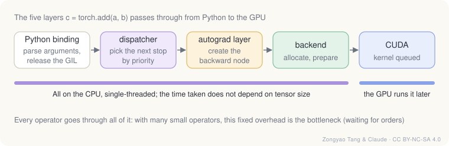

The thread: one operator call passes through five layers → the most unusual of them is the dispatcher, which decides which "features" the call passes through, in order → together the five layers cost several microseconds per call, which becomes the bottleneck when operators are many and small → finally a master index that tells you where any operator's entry point is. After this unit you should be able to go, in the PyTorch repository, from any Python function all the way to its CUDA implementation.
Part 2 · The PyTorch execution stack2.3 From a line of Python to a kernel
Translated by AI (Anthropic's Claude) from the Chinese edition. The Chinese original is the reference.
This unit answersBetween writing torch.add(a, b) and the GPU actually starting to compute, how many layers are there?
Follows 2.1–2.2. It explains where "waiting for orders" in 0.1 comes from, and is the map for finding your way into the PyTorch source.
- One operator call passes through five layers: bindings, dispatcher, autograd, backend implementation, CUDA
- The dispatcher is a table of "operators × features"; a call is passed down layer by layer in order of priority
- This path costs several microseconds every time; when the model is small and its operators fragmented, it becomes the bottleneck
- native_functions.yaml is the master index of all operators; reading the source starts here
Explanation
1One operator call passes through five layers: bindings, dispatcher, autograd, backend implementation, CUDA
Between writing torch.add(a, b) and the GPU starting to compute, this happens in order: the Python binding parses the arguments; the dispatcher looks up its table to decide whom to hand the call to; the autograd layer keeps the ledger; the backend implementation prepares the output tensor and picks a kernel; finally CUDA is called to put the kernel on the GPU's task queue, and the call returns at once.

The first four layers are a fixed cost every operator pays Take
c = torch.add(a, b), where a and b are tensors on the GPU that require gradients.One: the Python binding. The Python interpreter finds the function
torch.add, which is written in C++. The binding code parses the Python arguments into C++ types: it checks the number and types of arguments and picks the matching one among several overloads. Then it releases the GIL (0.3) and calls C++'sat::add.Two: the dispatcher.
at::addis not the implementation itself; it first enters the dispatcher, which looks at which "features" the input tensors carry (requires grad, on CUDA…), finds the one with the highest priority, and passes the call to the function responsible for it. The next card goes into detail.Three: the autograd layer. Because the inputs require gradients, the first to take over is autograd's wrapper function (2.2: it is generated). It does three things: creates the backward node of addition; calls "the real addition" through the dispatcher again (this time skipping the autograd layer); and once it has the result, hangs the node on it.
Four: the backend implementation. The second dispatch lands on the CUDA backend's addition. It does some preparation on the CPU: checks whether the two inputs' shapes can broadcast and how the data types are promoted; works out the output's shape; asks the allocator for memory for the output (2.1); and picks the kernel to use from the data type.
Five: CUDA. CUDA's interface is called to launch the kernel. This step only puts "run this kernel, with these arguments" on the GPU's task queue; the CPU returns without waiting for it to run (3.1: asynchrony).
Then all the way back: the result is wrapped into a Python
Tensorobject, the GIL is taken back, control returns to the interpreter, and the result is assigned toc. At this moment the addition on the GPU may not have started yet.Three things this path shows.
- Layers one to four all run on the CPU, single-threaded, and their time has nothing to do with the size of the tensors.
- One line of Python is not necessarily one kernel. Some operators call other operators internally, and each of those calls walks layers two to five again.
- The output's memory is allocated afresh at every call. So the allocator of 2.1 has to be fast.
This path is also the route map for reading the source: each layer corresponds to a place in the repository, and the source walkthrough below takes you through it.
Source walkthrough: following torch.add all the way
The goal is to find one spot in the repository for each of the five layers above. The file paths are from PyTorch 2.x; go by the version you have. Some of the files are generated at build time and are not in an unbuilt source tree; look at the templates that generate them, or at the header files shipped in the installed package.
The master index:
aten/src/ATen/native/native_functions.yaml. Search forfunc: add.Tensorand you see the operator's signature and the name of its implementation. Every route starts here.One: the binding. The generated file
torch/csrc/autograd/generated/python_torch_functions_*.cppcontainsTHPVariable_add. You can see three things in it: an argument parser (listing every overloaded signature ofadd); apybind11::gil_scoped_release(releasing the GIL); and a call toself.add(other). The script that generates it istools/autograd/gen_python_functions.py.Two: the dispatcher.
at::addis defined in the generatedFunctions.h/Operators.cpp, and is very short: get the operator's handle and callDispatcher::call. The dispatcher itself is inaten/src/ATen/core/dispatch/Dispatcher.h, and the dispatch keys are defined inc10/core/DispatchKey.h; the comment at the top of that file explains clearly what each key is for, and is worth reading.Three: the autograd layer. The generated
torch/csrc/autograd/generated/VariableType_*.cppcontainsadd_Tensor. Find these lines: the check whether gradients are needed (compute_requires_grad); creating theAddBackward0node and setting its next stops; callingat::redispatch::addinside the scope of a guard (this is "dispatch again, skipping autograd"); and finallyset_history, which hangs the node on the result.Four: the backend implementation. Element-wise binary operations share a common framework. In
aten/src/ATen/native/BinaryOps.cppyou can find the "structured" definition ofadd: ametafunction that works out the output's shape and type, and animplfunction that does the work. The CUDA version ofimplis underaten/src/ATen/native/cuda/(file names with something likeBinaryMiscOpsorBinaryMulKernel; addition sits with a few similar operations).Five: launching the kernel. CUDA's element-wise operations all end up calling the
gpu_kernelfamily of functions, defined inaten/src/ATen/native/cuda/Loops.cuhandCUDALoops.cuh. There you can see the real__global__function (3.2 covers how it is written) and the line that launches it: how the grid and block sizes are worked out, and which stream is used.After the walk, try to answer:
- When two tensors of different shapes are added, in which layer is broadcasting handled?
- If a does not require gradients, does the call still pass through layer three? (No. The dispatcher hands the call straight to the backend.)
- At which layer do
a.add_(b)(the in-place version) andtorch.add(a, b)start taking different code?
An analogyLike getting something done at a government office: the information desk checks your papers (binding), the ticket machine sends you to a counter by type of business (dispatcher), the first counter registers it (autograd), the second actually processes it (backend), and finally the file goes onto the "to be handled" conveyor (the CUDA queue). You leave with a receipt; the real processing of the file happens later.
So the time an operator spends on the CPU has nothing to do with how much it computes on the GPU: a scalar addition and a large matrix multiplication spend about the same time in these five layers.
Builds on The description has three more attributes, device, data type and layout, which decide an operator's implementationHow to "walk back" through each operator is written in one table, and the code is generated from itProcesses, threads and the GIL: why data loading uses several processesThe same pipeline seen as six layers; each layer down speaks a different language- The most unusual of the five layers is the second. It decides which "features" the call passes through, and in what order.
2The dispatcher is a table of "operators × features"; a call is passed down layer by layer in order of priority
Think of the dispatcher as a two-dimensional table: each row is an operator, each column a "feature" (autograd, mixed precision, CUDA backend, CPU backend…), and each cell holds a handler function. When an operator is called, the input tensors determine which columns are involved; the call starts at the column with the highest priority; that cell's function does its job, masks its own column, and dispatches again, landing on the next column.
The problem to solve. One
addmay need several things at once: record a backward node, convert precision, be traced by a compiler, and finally run on some hardware. Writing all of these intoadd's implementation would mean writing them again for each of a thousand operators, and changing them all again for each new feature.Dispatch keys. Each feature corresponds to a key (dispatch key). Keys have a fixed order of priority: "wrapping" features such as autograd and mixed precision come first, the hardware backends last.
Working out the set of keys for this call. It comes from three places:
- The keys each input tensor carries: which backend it is on (CPU, CUDA), whether it requires gradients.
- Keys the current thread has "switched on": for instance on entering a mixed-precision
autocastcontext. - Keys the current thread has "masked": for instance inside
no_grad, where autograd is masked.
Merge the first two, remove the third, and the highest-priority key in what remains decides which cell of the table this call goes to.
Dispatching again. Take a CUDA tensor that requires gradients:
- First dispatch: the set is {autograd, CUDA}; the highest is autograd. The call enters autograd's wrapper.
- After keeping the ledger, the wrapper adds "autograd" to the masked set and calls the operator once more.
- Second dispatch: autograd is masked, leaving {CUDA}. The call enters the CUDA implementation.
- On the way back, the masking is undone (using the guard pattern from the "background" in 2.1).
With mixed precision on as well, there is one more stop in between: autograd → mixed precision (convert the inputs to 16 bits) → CUDA.
How the cells are filled. Three ways:
- Register an implementation for one operator under one key (one cell).
- Register a key-independent implementation for one operator (a whole row).
- Register a "fallback" for one key that applies to all operators (a whole column). Some features cover every operator with one function this way.
What it does for you.
- It explains a set of behaviours: why operators are faster inside
no_grad(one stop fewer); why mixed precision needs no change to model code (it is a stop on the way); why torch.compile can "see" every operator (it takes over dispatch while tracing). - When reading the source, an operator's "implementation" is in more than one place. First be clear which column you are after: its backward? its CUDA kernel? its behaviour under mixed precision?
- It is also part of every call's fixed cost: each extra stop is one more table lookup and function call.
An analogyLike a document that needs stamps from several departments: the mail room works out from the document's type which departments it must pass, and sends it to the first in line; each department does its part, crosses itself off the routing slip, and hands it back to the mail room to go to the next.
So autograd, mixed precision, tracing and backend selection, features that have nothing to do with each other, can each be implemented independently and stacked freely. A new feature or a new hardware backend is just one more column in the table.
Builds on One operator call passes through five layers: bindings, dispatcher, autograd, backend implementation, CUDAThe description has three more attributes, device, data type and layout, which decide an operator's implementationUsed later in This path costs several microseconds every time; when the model is small and its operators fragmented, it becomes the bottlenecknative_functions.yaml is the master index of all operators; reading the source starts hereautocast: one more stop on the way of each operator call, choosing the precision by the kind of operator- How long do these five layers take altogether? For most models it is negligible, but in one kind of situation it takes the lead.
3This path costs several microseconds every time; when the model is small and its operators fragmented, it becomes the bottleneck
The first four layers all run on the CPU, single-threaded, and cost from a few to a few dozen microseconds per operator, regardless of tensor size. If the GPU needs only a few microseconds to execute the operator, the time goes mainly into the CPU "giving orders", and the GPU spends most of its time waiting for the next task.
Do the sum. An operator on the GPU takes time in two parts:
- On the CPU side: walking the first four layers and putting the kernel on the queue. A few to a few dozen microseconds, depending on how many stops it passes and how complex the operator's own preparation is.
- On the GPU side: the time the kernel actually runs, which depends on the amount of data.
One forward and backward step of a medium-sized Transformer is roughly a few thousand operator calls. At 20 microseconds each, the CPU side alone takes tens of milliseconds.
- If each operator takes hundreds of microseconds on the GPU (large matrix multiplications), the CPU gives orders much faster than the GPU executes them, there are always tasks waiting in the queue, and the GPU is always busy. The overhead is negligible.
- If each operator takes only a few microseconds on the GPU (small models, small batches, many small element-wise operations), the GPU, after finishing each one, waits for the CPU to send the next. Then the overall speed is set by that single thread on the CPU, and GPU utilisation may be only twenty or thirty percent. This is "waiting for orders" from 0.1, called "overhead-bound" among the three walls of 3.1.
How to tell.
- Double the batch. Double the batch; if a step's time barely changes (throughput nearly doubles), the time is mostly fixed overhead independent of the amount of data. If the time nearly doubles too, computation on the GPU is the main part. This is the method from Horace He's essay, the simplest and most reliable.
- Look at the profiler. Compare each operator's CPU time with its CUDA time. If the total CPU time is close to a step's total time and the total CUDA time is much smaller, it is overhead-bound. On the timeline, the GPU row shows small sparse blocks with gaps between them.
- Look at the shape of GPU utilisation. As 0.2 explained: steady at a middling level for a long time is the typical curve of this situation.
How to fix it, all different ways of "batching to spread fixed costs" from 0.1:
- A larger batch: the same number of orders, more work for the GPU each time.
- Fewer operators: turn loops into vectorised code; replace a string of small operators with one ready-made large one (for instance
F.scaled_dot_product_attentioninstead of hand-written attention). - torch.compile (2.5): compiles a whole stretch of computation into a few kernels, and also removes the Python and dispatcher layers.
- CUDA Graphs (3.6): removes even the cost of "launching a kernel".
- The fused optimizer of 2.6: merges the updates of hundreds of parameter tensors into one.
The backward pass is the same. The backward pass does not go through Python, but each node the engine runs still walks the dispatcher and the backend implementation. So a model with fragmented operators is limited this way in both forward and backward passes.
Troubleshooting: using the profiler to tell whether the bottleneck is framework overhead
from torch.profiler import profile, ProfilerActivity with profile(activities=[ProfilerActivity.CPU, ProfilerActivity.CUDA]) as prof: for _ in range(3): loss = model(x).sum() loss.backward() torch.cuda.synchronize() print(prof.key_averages().table(sort_by="self_cpu_time_total", row_limit=20))(Run a few warm-up steps before recording; 3.1 explains why.)
Look at the last lines of the table. At the bottom are the totals of CPU time and CUDA time.
- Total CPU time ≈ wall-clock time, total CUDA time only a fraction of it: overhead-bound.
- Total CUDA time ≈ wall-clock time: the GPU is always busy, the bottleneck is computation; look for cures in parts 3 and 4.
Look at each line. Sorted by
self_cpu_time_total, the top lines are the operators that take the most time on the CPU. Watch for two kinds:- Very many calls (
# of Calls), each very short: these are where the "fragmentation" comes from. Consider vectorising them or replacing them with one large operator. - Names that are not computations but things like
aten::to,aten::item,aten::copy_: the first two often mean data shuttling between CPU and GPU, or hidden synchronisation points..item()makes the CPU stop and wait for the GPU to finish all earlier tasks; calling it every step in the loop gives up the overlap that asynchrony provides.
Look at the timeline.
prof.export_chrome_trace("trace.json") # open with chrome://tracing or PerfettoThe CPU rows are dense function calls; the GPU row shows the kernels. When overhead-bound, the GPU row is a series of very short blocks with gaps wider than the blocks themselves; open the CPU time under a gap and you see what Python and the framework were doing then.
To see where Python's own time goes. The profiler mainly records operators. Python's own overhead (masses of small function calls and attribute accesses in the model's
forward) can be seen with a sampling tool such aspy-spy:py-spy top --pid <process id>lists the Python functions currently taking the most time.An analogyLike a lightning-fast cook paired with a waiter who writes orders slowly: each dish takes 5 seconds to cook, but the next order takes 20 seconds to arrive. However fast the cook, it does not help.
So in this situation a faster GPU does nothing. What works is fewer orders: a larger batch so each operator does more work, fusion to merge several operators into one, or torch.compile to remove this layer of overhead altogether.
Builds on The dispatcher is a table of "operators × features"; a call is passed down layer by layer in order of priority"Slow" on the pipeline comes in only four kinds: waiting for data, on compute, for orders, for the other GPUsFive ideas come back in every layerUsed later in Executing operators one by one cannot see the whole, so it cannot optimise across operatorsCompilation fights overhead and bandwidth, not computeThe optimizer can be slow too: hundreds of small kernels lose to a few large onesSynchronisation points: whenever the CPU needs an actual value from the GPU, it must stop and wait- Finally, a map. With it, each layer described above can be found in the repository.
4native_functions.yaml is the master index of all operators; reading the source starts here
Every PyTorch operator has an entry in native_functions.yaml: its name, the signature of its arguments and return value, and what its implementation is called on each backend. The bindings, the dispatcher registrations and the autograd wrappers are all generated at build time from this table (and from derivatives.yaml).
What an entry looks like.
- func: add.Tensor(Tensor self, Tensor other, *, Scalar alpha=1) -> Tensor structured_delegate: add.out variants: function, method - func: add.out(Tensor self, Tensor other, *, Scalar alpha=1, Tensor(a!) out) -> Tensor(a!) structured: True dispatch: CPU, CUDA: add_out ...(This is illustrative; real entries are longer and vary a little between versions.) How to read it:
func: the operator's full name and signature. After the dot is the overload name:add.Tensoris "tensor plus tensor", and there are others such asadd.Scalar.Tensor(a!)in a signature means that argument is modified in place.variants: in what form it appears in Python.functionistorch.add(a, b),methodisa.add(b).dispatch: on which backends, implemented by which C++ function. This is the content of the "backend" columns of the dispatcher's table. Operators without this item are usually composed of other operators, with one implementation for all backends.structured/structured_delegate: a way of writing that reduces repetition. The three variantsadd,add_(in place) andadd.out(given output) share one core implementation and differ only in where the output goes. The real implementation is registered on the.outentry.
Steps for finding an implementation with it.
- Search the table for
func: <operator name>. Names in Python and here mostly match. - Look at
dispatch. If there isCUDA: xxx, search forxxxunderaten/src/ATen/native/cuda/; if it saysCPU, CUDA: xxx, the two backends share one entry function and the kernels split one level further down; find the entry and follow it down. - If there is only
CompositeImplicitAutogradorCompositeExplicitAutograd, it is assembled from other operators, and the implementation is ordinary C++ calling other operators, in some.cppunderaten/src/ATen/native/. - To see its backward: search
tools/autograd/derivatives.yamlfor the same name (2.2).
A common surprise. Many functions you think of as "one operation" are composed.
torch.nn.functional.layer_norm, for instance, ends up at one dedicated operator, while some simple-looking functions call three or four operators internally, each walking the full five layers of 2.3. That is why, in the profiler, one Python call has several entries starting withaten::under it.This table and torch.compile. Once the compiler turns a model into a graph, the nodes of the graph are operators from this table. As 2.5 explains, an intermediate step of compilation "decomposes" more than a thousand operators into one or two hundred basic ones, and the rules of decomposition are written against this table too.
An analogyLike the directory board in the lobby of a large building: to find any company, first look up its floor and room number on the board, then go up.
So for "where is this function implemented", do not search the repository blindly for the function name. First find it in this table, see what name its implementation is registered under, then search for that name.
Putting it together
An operator call passes, in order, through: Python bindings (parse the arguments, release the GIL) → the dispatcher (look up the table) → the autograd layer (keep the ledger) → the backend implementation (the chosen kernel) → CUDA (put the task on the queue). The dispatcher is a table of "operators × features", passing the call down layer by layer in order of priority. This path costs a fixed overhead of several microseconds every time. Every operator is registered in native_functions.yaml, where reading the source starts.
Test yourself
Without looking back at the explanation, say it in your own words.
- Which layers does a PyTorch operator call pass through, in order, from Python to the GPU? What does each layer do?
- How does the dispatcher decide which function an operator call goes to? What is "dispatching again"?
- What is "framework-overhead-bound"? How do you tell whether a model is in this situation? What are the cures?
- What does native_functions.yaml record about an operator? How do you use it to find an operator's CUDA implementation?